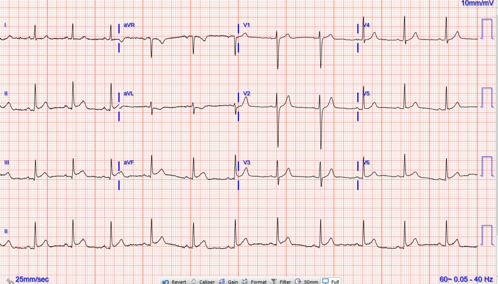
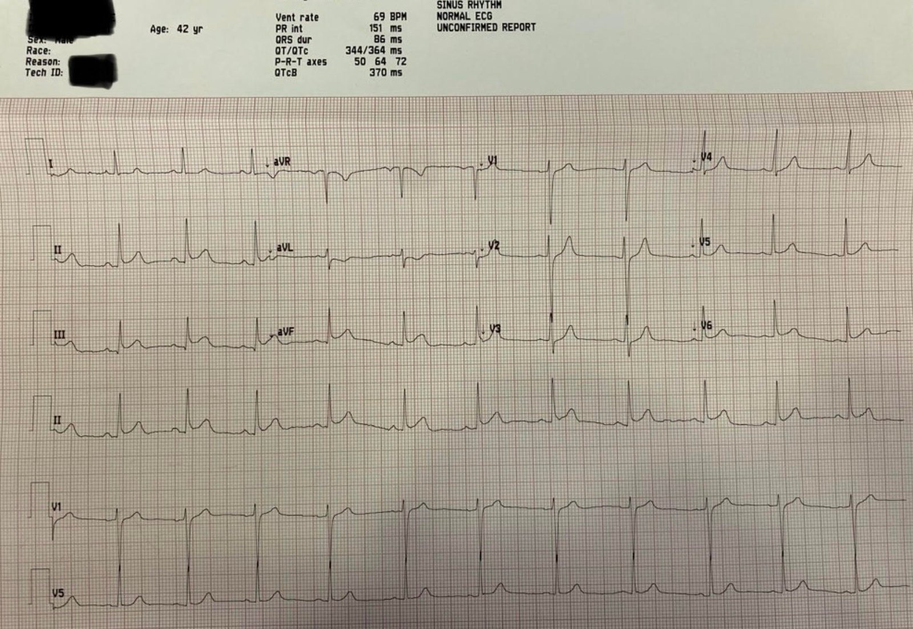
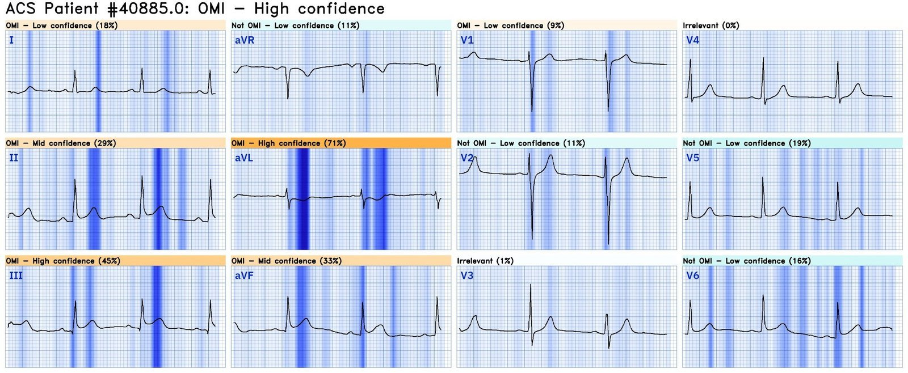
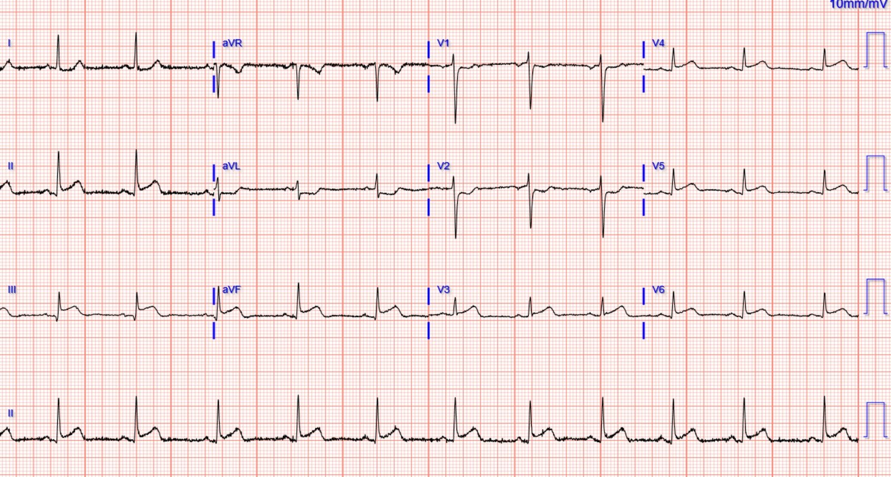
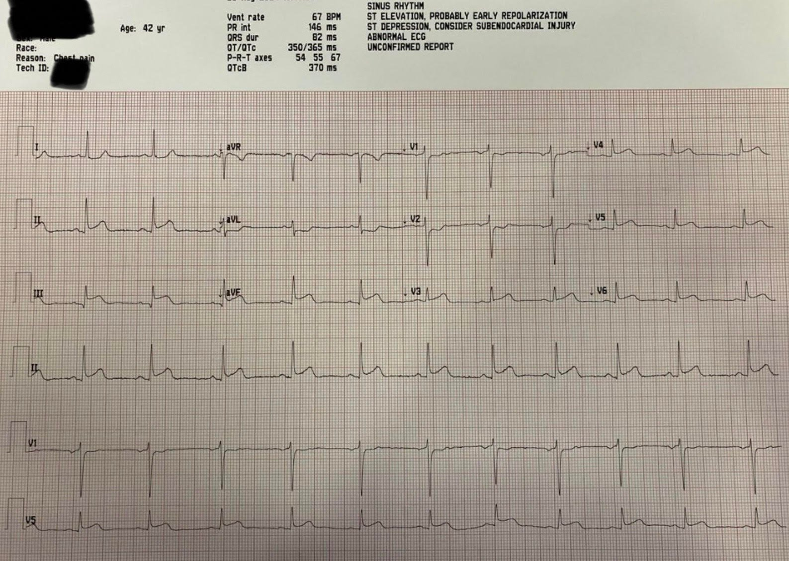
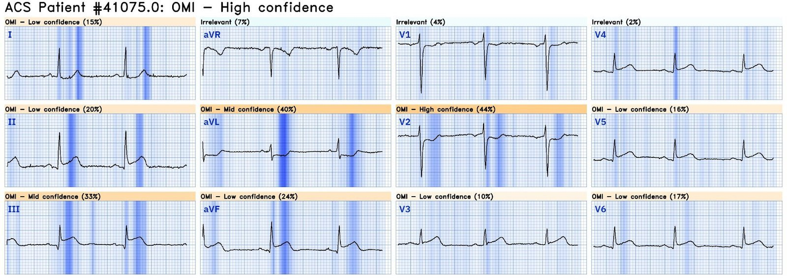
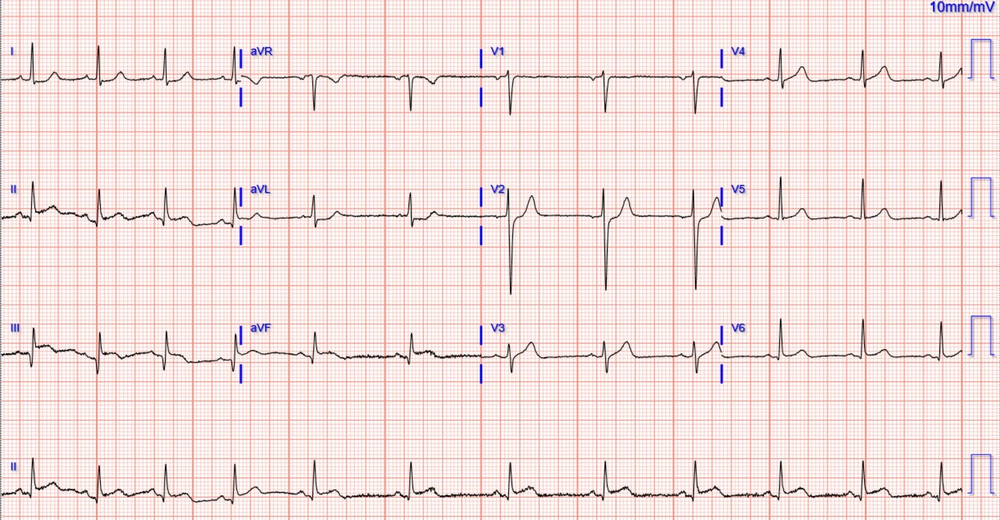
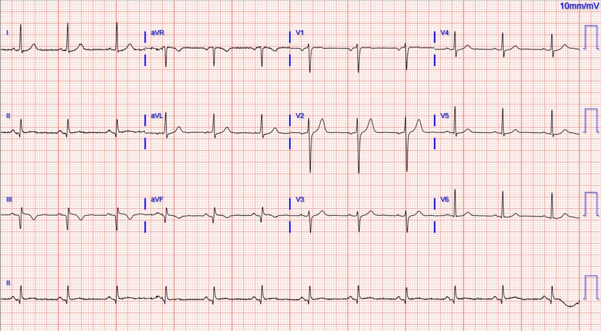
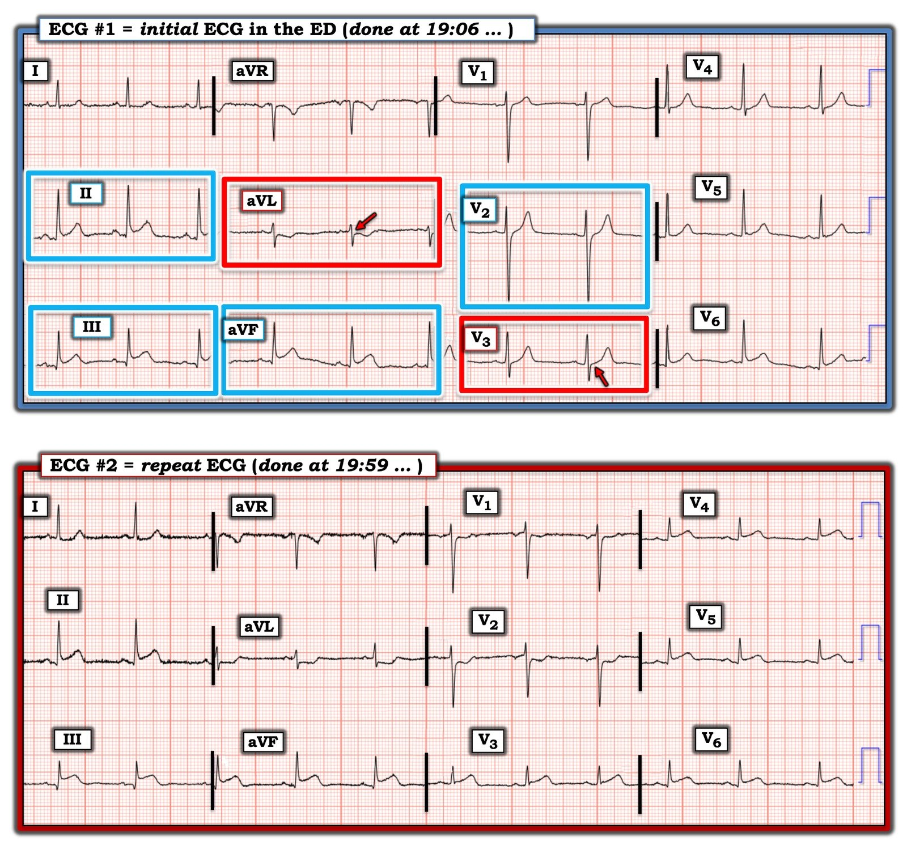

11/06/2024 — Điều gì sẽ xảy ra nếu hệ thống của bạn áp dụng khuyến nghị rằng điện tâm đồ được máy tính đọc là “bình thường” không cần cho bác sĩ xem?
Bản dịch tiếng Việt của bài "What if your system adopted the recommendation that a computer “normal” ECG need not be shown to the doctor?" – Dr. Smith’s ECG Blog. Giữ nguyên toàn bộ 10 hình ảnh của bản gốc.
Tác giả Pendell Meyers, Smith biên tập. Người gửi ẩn danh
Một người đàn ông ngoài 40 tuổi, không có bệnh tim trước đó, đến khám trong vòng 30 phút kể từ khi khởi phát đau ngực cấp, xuất hiện lúc đang tập thể dục. Kèm theo khó thở và đau lan ra cánh tay trái.
Điện tâm đồ lúc phân loại (triage) này (điện tâm đồ #1) được ghi cho một bệnh nhân đau ngực tại khu phân loại lúc 1906 (phía trên là ảnh chất lượng cao nhất, phía dưới là ảnh chụp có kèm kết quả đọc bằng thuật toán máy tính):




Điện tâm đồ này cho thấy rõ ràng tắc động mạch vành cấp vùng dưới (OMI). Thuật toán thông thường đã bỏ sót nó một cách hiển nhiên.
Nhiều hệ thống hiện nay không còn cho các bác sĩ cấp cứu bận rộn xem các điện tâm đồ được máy tính đọc là “bình thường” lúc phân loại, vì những bài báo được thiết kế rất kém, cho rằng nếu thuật toán máy tính nói “bình thường” thì không cần làm phiền bác sĩ cấp cứu.
May mắn là cơ sở này có cho bác sĩ xem mọi điện tâm đồ lúc phân loại, và trong ca này bác sĩ đã nhận ra OMI ngay lập tức và kích hoạt chuyển viện cấp cứu đến trung tâm PCI tại địa phương.
Đây là điện tâm đồ được Queen of Hearts đọc:


Click here to sign up for Queen of Hearts Access (Bấm vào đây để đăng ký quyền sử dụng Queen of Hearts)
Đây là điện tâm đồ #2 lúc 1959 (tôi cho rằng đây là thời điểm đến trung tâm PCI):




Giờ đây đã là STEMI toàn phát ở 3 vùng cơ tim: dưới, sau và bên
Nhưng ít nhất nó không gọi là “Bình thường.”
Queen of Hearts:


Troponin ban đầu (troponin I độ nhạy cao) trả về dưới 6 ng/L. Dưới giới hạn phát hiện.
Kết quả chụp mạch vành gồm:
Hẹp 95% RCA đoạn giữa, kèm tắc động mạch liên thất sau phải (PDA) đoạn xa do huyết khối (OMI dai dẳng). Đặt stent phủ thuốc thành công, mở rộng chỗ hẹp 95% RCA đoạn giữa xuống còn 0% hẹp tồn lưu
Bệnh hệ mạch vành trái không tắc nghẽn.
Chụp buồng thất trái cho thấy giảm động nặng vùng dưới-mỏm, phân suất tống máu thất trái 50–55%. LVEDP 25. Đây là sự mất cơ tim và phân suất tống máu đáng kể. Một phần chức năng có thể hồi phục sau vài tuần.
Điều trị nội khoa cho tắc do huyết khối ở động mạch liên thất sau phải đoạn xa.
Siêu âm tim chính thức:
Chức năng tâm thu ở giới hạn dưới của bình thường. Phân suất tống máu 50% +/- 5% , tính theo phương pháp Simpson hai bình diện (biplane MOD). Giảm động nặng cơ tim thành dưới và dưới vách đoạn giữa-mỏm.
Diễn biến troponin:
dưới 6 ng/L
933 ng/L
13.386 ng/L, điển hình của STEMI
(không đo thêm — đỉnh có thể đã cao hơn nhiều nếu được đo đến lúc đạt đỉnh)
Các điện tâm đồ ghi lại sau PCI:




Các bản ghi này cho phép chẩn đoán tái tưới máu.
Bệnh nhân được xuất viện về nhà vào ngày hôm sau. Không có thông tin theo dõi thêm.
Những điểm cần học:
Bạn không thể tin vào các thuật toán thông thường, ngay cả để phát hiện OMI STEMI dương tính (STEMI(+) OMI), ngay cả khi chúng nói “điện tâm đồ bình thường.” Chúng tôi đã đưa ra nhiều ví dụ về điều này trên blog.
Queen of Hearts hiện đã có và hoạt động tốt.
Click here to sign up for Queen of Hearts Access (Bấm vào đây để đăng ký quyền sử dụng Queen of Hearts)
Không nên chờ troponin khi bệnh sử và điện tâm đồ đã đủ để chẩn đoán. Ngay cả trong OMI STEMI dương tính rõ ràng, troponin ban đầu vẫn có thể âm tính trong khoảng thời gian ngắn đầu tiên kể từ khi khởi phát OMI.
Queen of Hearts chẩn đoán được hầu hết các điện tâm đồ được gọi là “Bình thường” này mà thực chất là OMI, và cô ấy làm vậy với Độ tin cậy Cao:
Xem bài viết gồm 10 ca này:
When the conventional algorithm diagnoses the ECG as COMPLETELY NORMAL, but there is in fact OMI, what does the Queen of Hearts PM Cardio AI app say? (with 10 case examples) (Khi thuật toán thông thường chẩn đoán điện tâm đồ HOÀN TOÀN BÌNH THƯỜNG nhưng thực chất có OMI, ứng dụng AI Queen of Hearts của PM Cardio nói gì? – kèm 10 ca ví dụ)
Xem các bài liên quan khác:
An undergraduate who is an EKG tech sees something. The computer calls it completely normal. How about the physicians? (Một sinh viên đại học làm kỹ thuật viên điện tâm đồ nhận thấy điều gì đó. Máy tính gọi là hoàn toàn bình thường. Còn các bác sĩ thì sao?)
Three patients with chest pain and “normal” ECGs: which had OMI? Which were normal? And how did the Queen of Hearts perform? (Ba bệnh nhân đau ngực có điện tâm đồ “bình thường”: ai có OMI? Ai bình thường? Và Queen of Hearts thể hiện ra sao?)
Four patients with chest pain and ‘normal’ ECG: can you trust the computer interpretation? (Bốn bệnh nhân đau ngực có điện tâm đồ ‘bình thường’: bạn có thể tin kết quả đọc bằng máy tính không?)
Chest pain and a computer ‘normal’ ECG. Therefore, there is no need for a physician to look at this ECG. (Đau ngực và điện tâm đồ máy tính đọc là ‘bình thường’. Vì vậy, không cần bác sĩ xem điện tâm đồ này.)
Và y văn:
McLaren, Meyers, Smith and Chartier. Emergency department Code STEMI patients with initial electrocardiogram labeled ‘normal’ by computer interpretation: a 7-year retrospective review. Acad Emerg Med 2024;31:296-300 (Bệnh nhân báo động STEMI tại khoa cấp cứu có điện tâm đồ ban đầu được máy tính đọc là ‘bình thường’: tổng quan hồi cứu trong 7 năm)

===================================
BÌNH LUẬN CỦA TÔI, bởi KEN GRAUER, MD (11/6/2024):
===================================
Nhận biết các biến thể tái cực có thể là thách thức. Đôi khi, việc phân biệt giữa một biến thể tái cực với giai đoạn sớm của OMI cấp có thể không thực hiện được nếu chỉ dựa vào một điện tâm đồ duy nhất.
- Làm cho vấn đề càng phức tạp thêm (theo Bình luận của tôi trong bài ngày 22 tháng Tám năm 2020 trên Dr. Smith’s ECG Blog) — hình dạng ST-T trong các biến thể tái cực có thể thay đổi động! Đôi khi — hình dạng ST-T của các biến thể tái cực có thể thay đổi từ giờ này sang giờ khác — hoặc, hình dạng ST-T có thể thay đổi do khác biệt về tần số tim, do gắng sức, hoặc do thay đổi trương lực phế vị — và đôi khi thậm chí không có lời giải thích rõ ràng nào.
- Cuối cùng
— thực tế lâm sàng là một bệnh nhân có điện tâm đồ “nền”
biểu hiện một biến thể tái cực — có thể đến một lúc nào đó bị
tắc động mạch vành cấp mà một phần bị che lấp bởi các đặc điểm điện tâm đồ trông có vẻ lành tính của biến thể tái cực sẵn có.
Chính vì những lý do trên mà lúc đầu tôi không chắc chắn về hình dạng ST-T ở các chuyển đạo dưới của điện tâm đồ ban đầu trong ca hôm nay (nằm trong các hình chữ nhật màu XANH nhạt ở chuyển đạo II,III,aVF trong Hình 1).
- Mặc dù mức ST chênh lên tại điểm J ở chuyển đạo II,III,aVF trong Hình 1
nhiều hơn mức thường thấy ở các biến thể tái cực, và đỉnh
sóng T ở các chuyển đạo này có vẻ “đồ sộ” hơn bình thường — thì
hình dạng lõm lên của đoạn ST (tức là cấu hình “mặt cười”) cũng không khác so với hình dạng thấy ở nhiều biến thể tái cực. - Các sóng q nhỏ và hẹp thấy ở mỗi chuyển đạo dưới của điện tâm đồ #1
— nhưng ở bệnh nhân này với trục mặt phẳng trán tương đối thẳng đứng,
sóng q hẹp ở chuyển đạo dưới là một biểu hiện bình thường thường gặp của khử cực
vách. - ĐIỀU CỐT LÕI: Tôi sẽ không chẩn đoán OMI cấp nếu chỉ dựa vào hình dạng ở các chuyển đạo dưới trong bản ghi ban đầu của ca hôm nay.
Điểm MẤU CHỐT: Mặc dù tôi cảm thấy hình dạng ST-T ở chuyển đạo II,III,aVF chưa đủ để chẩn đoán — chẩn đoán điện tâm đồ xác định OMI cấp vẫn có trong điện tâm đồ #1 vì các lý do sau:
- Bệnh sử lâm sàng ngay lập tức xếp bệnh nhân hôm nay vào nhóm có tỷ lệ mắc cao hơn những bệnh nhân nhiều khả năng đang tiến triển OMI cấp (tức là một người đàn ông trung niên đến khoa cấp cứu vì CP [Đau Ngực] mới khởi phát, xảy ra trong lúc gắng sức và kéo dài ít nhất 30 phút!).
- Hình dạng ST-T ở chuyển đạo aVL không thể nào bình thường được (nằm trong hình chữ nhật ĐỎ ở chuyển đạo này). ST-T chênh xuống soi gương thực sự không xuất hiện ở các biến thể tái cực. Tuy có thể thấy một ít sóng T đảo ngược bình thường ở chuyển đạo aVL khi QRS chủ yếu âm — nhưng trong những trường hợp đó không được có điểm J chênh xuống (mũi tên ĐỎ ở chuyển đạo aVL) — và sóng T đảo ngược không nên “đồ sộ” như ở chuyển đạo aVL của điện tâm đồ #1.
- Một khi đã biết rằng ở bệnh nhân CP mới này, hình dạng ST-T ở chuyển đạo aVL chắc chắn bất thường (và phù hợp với ST chênh xuống soi gương) — thì chúng ta buộc phải giả định rằng ST chênh lên dạng lõm ở mỗi chuyển đạo dưới không đơn thuần do biến thể tái cực — mà phải được diễn giải là OMI thành dưới cấp cho đến khi chứng minh được điều ngược lại.
- ĐIỂM THEN CHỐT (PEARL):
Tổn thương thành sau cấp thường đi kèm OMI thành dưới
cấp. Do đó, việc các chuyển đạo chi cho thấy OMI thành dưới cấp
— cần thúc đẩy chúng ta soi kỹ các chuyển đạo trước để tìm bất kỳ gợi ý nào
về tổn thương thành sau. - Như đã nói — hình dạng ST-T ở chuyển đạo V3 của điện tâm đồ #1 không thể nào bình thường được (nằm trong hình chữ nhật ĐỎ ở chuyển đạo này). Như chúng tôi thường nhấn mạnh trên Dr. Smith’s ECG Blog — bình thường có ST chênh lên nhẹ, dốc lên ở chuyển đạo V2 và V3. Mũi tên ĐỎ ở chuyển đạo V3 làm nổi bật đường nền đẳng điện (tức là không chênh lên) của điểm J ở chuyển đạo này — điều mà trong bối cảnh các dấu hiệu điện tâm đồ nói trên gợi ý mạnh OMI thành sau cấp cho đến khi chứng minh được điều ngược lại.
- Theo khái niệm chuyển đạo lân cận — tôi rất nghi ngờ hình dạng ST-T ở chuyển đạo V2 cũng bất thường vì: i) Chỉ có điểm J chênh lên ở mức tối thiểu nhất ở chuyển đạo này; và, ii) Sóng T trông nhọn hơn dự kiến (có thể gợi ý phần nào tái tưới máu thành sau).
- XIN NHẤN MẠNH: Riêng chuyển đạo V2 thì tôi sẽ không coi là bất thường (đặc biệt khi sóng S ở chuyển đạo này rất sâu) — nhưng vì bệnh sử và hình dạng ở chuyển đạo chi đã đủ chẩn đoán OMI thành dưới cấp — và
— vì chuyển đạo V3 thực sự gợi ý có kèm tổn thương thành sau cấp
— nên tôi nghi ngờ những thay đổi tinh tế ở chuyển đạo V2 có lẽ cũng bất thường.


Hình 1: Tôi đã đánh dấu điện tâm đồ ban đầu của ca hôm nay — và so sánh với điện tâm đồ ghi lại 53 phút sau đó.
Chúng ta học được gì từ điện tâm đồ #2?
Chẩn đoán OMI dưới–sau–bên cấp trở nên rõ ràng với diễn tiến thấy trên điện tâm đồ #2:
- ST chênh lên ở các chuyển đạo dưới trên điện tâm đồ #2 đã tăng lên — và hình dạng của đoạn ST chênh lên này rõ ràng đã mang dáng vẻ cấp tính hơn.
- ST chênh xuống ở chuyển đạo aVL nhiều hơn — và hình dạng của đoạn ST chênh xuống soi gương này đã mang dáng vẻ “dạng bậc thềm” (shelf-like).
- Sóng T nhọn thấy trước đó ở chuyển đạo V2 đã được thay bằng ST chênh xuống. Sóng T dương thấy ở chuyển đạo V1 của điện tâm đồ #1 cũng đã mất.
- Giờ đây đoạn ST thẳng đuỗn rõ rệt, kèm ST chênh lên chắc chắn ở các chuyển đạo V3 đến V6.
Tại thời điểm này — STEMI đã được chẩn đoán, và bệnh nhân được thông tim kèm PCI.
- Với bệnh sử đau ngực đáng lo ngại mới khởi phát — điện tâm đồ ban đầu trong ca hôm nay đã cho phép chẩn đoán OMI dưới-sau cấp vì những lý do đã trình bày chi tiết ở trên.
- Việc troponin ban đầu bình thường hoàn toàn không loại trừ được OMI cấp — vì troponin ban đầu không phải lúc nào cũng tăng.
- Điểm MẤU CHỐT: So sánh giữa điện tâm đồ #1 và điện tâm đồ #2
ghi chỉ 53 phút sau đó — cho thấy một thay đổi ngoạn mục! Các bất thường
ST-T đáng kể có thể tiến triển trong vòng vài phút ở một OMI đang
diễn ra. Nếu điện tâm đồ ban đầu trong ca hôm nay không được
nhận ra là chẩn đoán OMI cấp — hoặc — bác sĩ tim mạch can thiệp
trực vẫn chưa bị thuyết phục về nhu cầu thông tim
sớm từ điện tâm đồ ban đầu — thì nhiều khả năng một điện tâm đồ ghi lại sớm hơn nhiều so với 53 phút sau đã đáp ứng được tiêu chuẩn thông tim của họ. - Trong những ca như thế này — nên ghi lại điện tâm đồ mỗi ~10-20 phút cho đến khi có những thay đổi trên điện tâm đồ đủ để bệnh nhân được chấp nhận đưa đi thông tim.